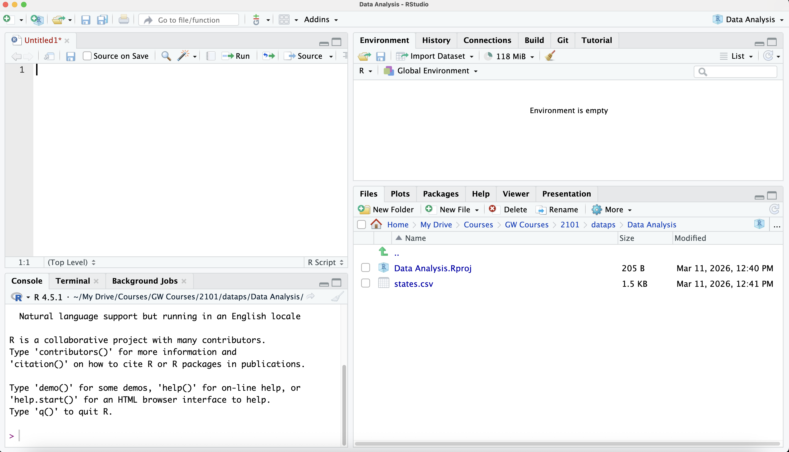
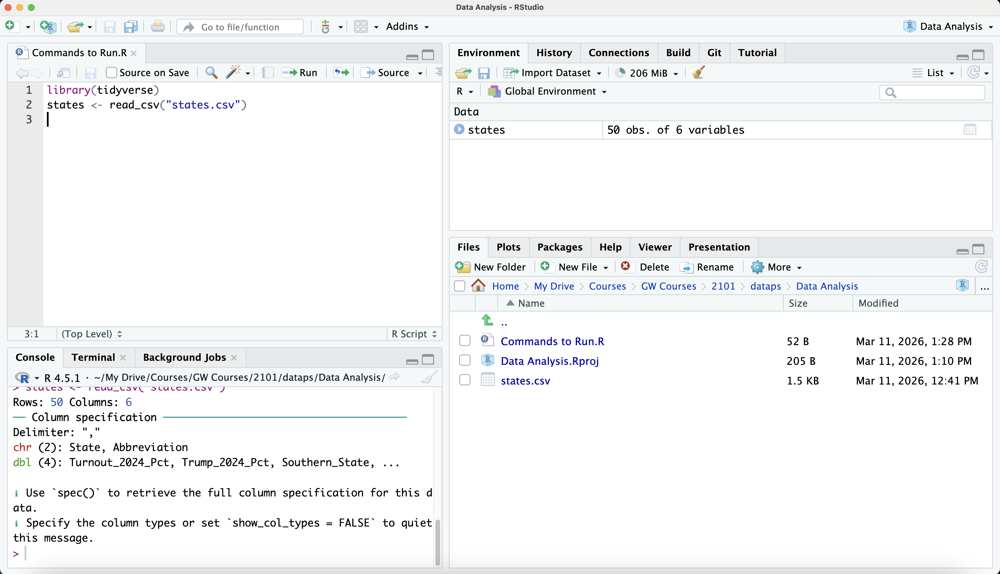
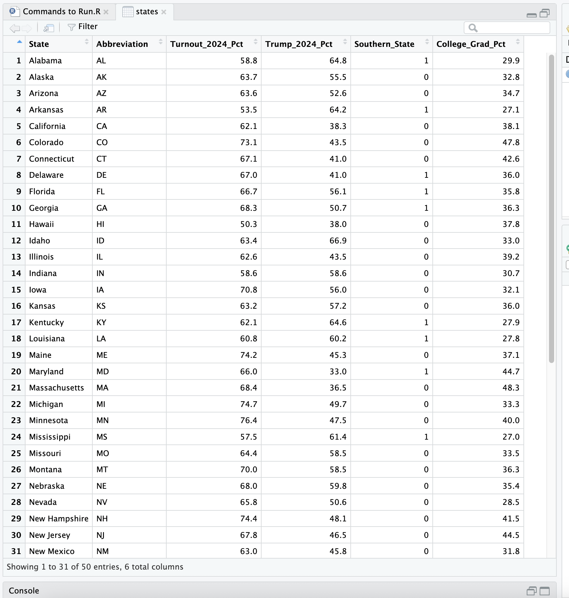
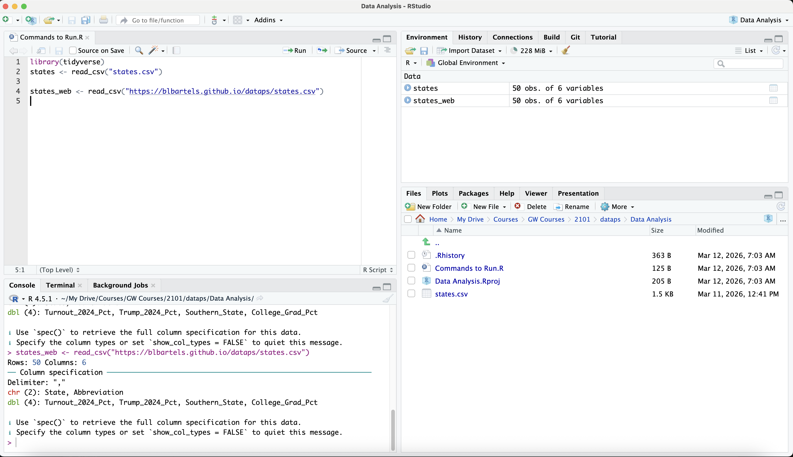

library(tidyverse)
states <- read_csv("states.csv")
3 Data Importing and Organization
Once researchers have either collected their data or have accessed stock data from a public website (such as in Table A.1 in Appendix A), they will need to engage with the following steps in preparation for data analysis in the subsequent chapters:
- Import data into RStudio and understand data features.
- Understand and/or create value labels for variables in your dataset.
- Generate and recode new variables.
- Execute procedures to streamline and simplify data analysis.
- Merge two datasets together.
This chapter will make extensive use of many of the tidyverse packages and commands, which are extremely useful for the topics discussed in this chapter.
3.1 Importing Data
Three general ways exist for importing data into RStudio: (1) save the dataset on your hard drive (using the “projects” approach I recommended in Section 1.5.1) and import it within RStudio; (2) import a dataset that is stored on a website (via a url); and (3) use and/or import a dataset that is stored within an R package that you have installed and loaded.
3.1.1 Importing Data Saved to Your Hard Drive
RStudio can easily and seamlessly import data in just about any format you can imagine with both base R packages and certain add-on packages. Table 3.1 includes the most common data formats in political science, the R packages required (I focus here on add-on packages), and the command from the package to import the data.
| File Extension | Source Software | R Package | Import Command |
|---|---|---|---|
.rds |
R (Single Object) | readr (tidyverse) |
read_rds() |
.csv |
Universal (Spreadsheet) | readr (tidyverse) |
read_csv() |
.dta |
Stata | haven |
read_dta() |
.sav / .por |
SPSS | haven |
read_sav() / read_por() |
.xls / .xlsx |
Excel | readxl |
read_excel() |
Again, these are the most common data formats in political science, but this is not an exhaustive list. I will start with a simple example of importing a small dataset containing information on the 50 states. Following the “projects” recommendation from Section 1.5.1, I have created a folder called “Data Analysis” on my hard drive. Inside that folder is an .Rproj called “Data Analysis.Rproj.” Recall that anytime I want to work in this project, I simply double click on the .Rproj file to begin a new RStudio session, and RStudio will automatically set my “Data Analysis” folder as the home directory. That means when I import my data, I do not need enter the entire file path. If my dataset is in my home directory, I can simply type the name of the file when importing it (see Section 1.5.1). Figure 3.1 displays my screen upon starting my RStudio session. Looking to the lower-right quadrant, the dataset called “states.csv” appears in my home directory.

Now we need to issue a command to RStudio to import the data. Recall from Chapter 1 that users can run commands in R in two ways: (1) Entering the command in the “Console” (lower-left quadrant) where the cursor is blinking or (2) entering commands in an .R script file (which opens in the upper-left quadrant) that you can save to your hard drive for future use (keeping them as a record of the packages you need to load and the commands that you ran). I will mostly do the latter in this book. Recall from Chapter 1 that to open an .R script, click on File –> New File –> R Script. Figure 3.1 shows that I have an opened .R script that by default is called “Untitled.” I will show that I saved the file below.
Users can run commands within an .R script in multiple ways:
- Simply place your cursor anywhere in the command line and click the “Run” button in the menu bar right above the .R script (the one with a green arrow to the left of it).
- Use a keystroke: For Macs, put the cursor anywhere on the line and type command-return. For PCs, type ctrl-enter.
- Highlight all of the text in a command line and then type this same keystroke.
- Users can also run multiple commands with one keystroke: Simply highlight multiple command lines and use the same keystroke (or click on “Run”).
As Table 3.1 highlights, we will need the readr package to import a .csv (“comma separated values”) file. readr is in the tidyverse suite of packages; when you load the tidyverse package, readr is 1 of the 9 packages that is loaded. If you already installed tidyverse after reading Section 1.4, then you do not need to install it again. If you have not yet installed tidyverse, you can do so now by typing: install.packages("tidyverse"). Here is the code to import the states.csv dataset into RStudio. Note that I have called up the tidyverse package (see Chapter 1), which also calls up the readr package needed to import the .csv. file.
In the second line, notice the notation I have used. I am creating a new data object called “states.” I use the assignment operator, <-, to tell RStudio, “Give me a data object called ‘states’ that is the ‘states.csv’ file in my home directory.” read_csv is the command (from the readr package) that imports the dataset into the RStudio environment.
Now, my RStudio screen looks like Figure 3.2:

First, I saved my .R script as “Commands to Run.R,” which also now appears in my home directory. The same two command lines as above are in the .R script. After I load states.csv, the object “states” appears in the “Environment” window in the upper-right quadrant. That means the data are successfully loaded. Next to the data name, the Environment tab lists that the states data has 50 observations (rows) and 6 variables (columns). In a dataset, the units of analysis are rows, while the columns are the variables. States are the units of analysis (N=50), and the dataset contains 6 variables.
To view the data, users can click on the “states” object in the Environment window or type View(states) in the command window or the .R script. Figure 3.3 shows a zoomed-in view of the upper-left quadrant. Notice this cross-sectional data. Each row is a state, and one can see the state name and abbreviation. The data also include turnout percentage in the 2024 presidential election, the percentage of voters voting for Trump, whether the state is a Southern state or not, and the percentage of adults in the state with a college degree or higher.

Another way to see the first few observations in the state is use the head command:
head(states)# A tibble: 6 × 6
State Abbreviation Turnout_2024_Pct Trump_2024_Pct Southern_State
<chr> <chr> <dbl> <dbl> <dbl>
1 Alabama AL 58.8 64.8 1
2 Alaska AK 63.7 55.5 0
3 Arizona AZ 63.6 52.6 0
4 Arkansas AR 53.5 64.2 1
5 California CA 62.1 38.3 0
6 Colorado CO 73.1 43.5 0
# ℹ 1 more variable: College_Grad_Pct <dbl>Or I can specify the number of observations I want to see:
head(states, n=12)# A tibble: 12 × 6
State Abbreviation Turnout_2024_Pct Trump_2024_Pct Southern_State
<chr> <chr> <dbl> <dbl> <dbl>
1 Alabama AL 58.8 64.8 1
2 Alaska AK 63.7 55.5 0
3 Arizona AZ 63.6 52.6 0
4 Arkansas AR 53.5 64.2 1
5 California CA 62.1 38.3 0
6 Colorado CO 73.1 43.5 0
7 Connecticut CT 67.1 41 0
8 Delaware DE 67 41 1
9 Florida FL 66.7 56.1 1
10 Georgia GA 68.3 50.7 1
11 Hawaii HI 50.3 38 0
12 Idaho ID 63.4 66.9 0
# ℹ 1 more variable: College_Grad_Pct <dbl>Note that it includes as many variables as it can fit on the screen. Connecting to the discussion of “levels of measurement” (Section 2.2.3), the output includes the labels chr and dbl at the top of each variable. chr = “character” or a string variable (letters only or a mix of letters and numbers). dbl = “double,” which in RStudio means a numeric variable (in this case an interval variable) with decimal points. Note that even the South variable has the dbl format despite not having decimals.
A similar command that comes from the tidyverse is called glimpse:
glimpse(states)Rows: 50
Columns: 6
$ State <chr> "Alabama", "Alaska", "Arizona", "Arkansas", "Californ…
$ Abbreviation <chr> "AL", "AK", "AZ", "AR", "CA", "CO", "CT", "DE", "FL",…
$ Turnout_2024_Pct <dbl> 58.8, 63.7, 63.6, 53.5, 62.1, 73.1, 67.1, 67.0, 66.7,…
$ Trump_2024_Pct <dbl> 64.8, 55.5, 52.6, 64.2, 38.3, 43.5, 41.0, 41.0, 56.1,…
$ Southern_State <dbl> 1, 0, 0, 1, 0, 0, 0, 1, 1, 1, 0, 0, 0, 0, 0, 0, 1, 1,…
$ College_Grad_Pct <dbl> 29.9, 32.8, 34.7, 27.1, 38.1, 47.8, 42.6, 36.0, 35.8,…Notice that glimpse inverts the rows and columns, which makes it a bit counterintuitive to some. However, one point of glimpse is to highlight the variables in the dataset.
In datasets with many variables, another helpful command is names, which lists all of the variables in the dataset:
names(states)[1] "State" "Abbreviation" "Turnout_2024_Pct" "Trump_2024_Pct"
[5] "Southern_State" "College_Grad_Pct"Another way to see how the variables are stored (e.g., numeric, character) is by using the “class” command:
class(states$State)[1] "character"class(states$Abbreviation)[1] "character"class(states$Turnout_2024_Pct)[1] "numeric"class(states$Trump_2024_Pct)[1] "numeric"class(states$Southern_State)[1] "numeric"class(states$College_Grad_Pct)[1] "numeric"The class command tells the user how the variable is stored. Note the naming convention used here, which is common in “base R.” To specify a variable, we use the “dollar sign” method: Before the dollar sign is the name of the data object (states) and after is the variable name. “State” and “Abbreviation” are character variables (strings), while the remaining variables are numeric. Knowing the class of a variable, and the level of measurement a variable takes on, becomes very important for many subsequent analyses in RStudio. I will return to that issue throughout the book.
The “Southern_State” variable, which takes on a value of 1 for Southern states and 0 for non-Southern states, gets a special name in data analysis and statistics: a dummy variable. A dummy variable is a binary variable (i.e., a variable that takes on only two values); researchers typically refer to independent variables (not dependent variables) as dummy variables. Note that dummy variables are always coded as 0 or 1 (as opposed to 1 versus 2 or 3 versus 4).
3.1.2 Importing Data From a Dataset Saved on a Website
Some datasets are stored on institutional websites or on a researcher’s website. Instead of having to download the dataset to your hard drive, you can simply tell RStudio to import the data from the website into your RStudio environment. You need to have an internet connection to execute this procedure, of course. The procedure is simple and requires the same packages and commands as discussed in Section 3.1.1. But instead of inserting the dataset name (e.g., “states.csv”), one enters the entire url. I have stored this same “states.csv” dataset on a website, which means the dataset has its own unique url. To import it straight from the web, I execute the following command:
states_web <- read_csv("https://blbartels.github.io/dataps/states.csv")Figure 3.4 shows my screen after importing this same states.csv dataset but from a website instead. I named this dataset “states_web,” but it is the exact same dataset as “states.” This object now appears in the Environment window (upper-right quadrant) in addition to the “states” object. Herein lies a major advantage of RStudio over other statistical software packages such as Stata and SPSS: The ability to import multiple datasets at a time. This feature is extremely useful in many data analysis contexts, which I will highlight in other parts of the book. Moreover, users can save objects other than datasets, including regression model results or a stored value from a particular calculation or equation.

3.1.3 Importing Data From an R Package
Some R packages contain datasets that researchers can analyze in RStudio without having to download them on one’s hard drive or even having to import them to one’s RStudio environment. An example is a well-known dataset called “gapminder,” which contains data on 142 countries over a select number of years from 1952-2007. To install the gapminder package, type: install.packages("gapminder")
Once you load the package using the library command, you can actually begin analyzing the dataset called “gapminder” without even having to import it into your RStudio environment. For instance, consider this code:
library(gapminder)
names(gapminder)[1] "country" "continent" "year" "lifeExp" "pop" "gdpPercap"head(gapminder, n=20)# A tibble: 20 × 6
country continent year lifeExp pop gdpPercap
<fct> <fct> <int> <dbl> <int> <dbl>
1 Afghanistan Asia 1952 28.8 8425333 779.
2 Afghanistan Asia 1957 30.3 9240934 821.
3 Afghanistan Asia 1962 32.0 10267083 853.
4 Afghanistan Asia 1967 34.0 11537966 836.
5 Afghanistan Asia 1972 36.1 13079460 740.
6 Afghanistan Asia 1977 38.4 14880372 786.
7 Afghanistan Asia 1982 39.9 12881816 978.
8 Afghanistan Asia 1987 40.8 13867957 852.
9 Afghanistan Asia 1992 41.7 16317921 649.
10 Afghanistan Asia 1997 41.8 22227415 635.
11 Afghanistan Asia 2002 42.1 25268405 727.
12 Afghanistan Asia 2007 43.8 31889923 975.
13 Albania Europe 1952 55.2 1282697 1601.
14 Albania Europe 1957 59.3 1476505 1942.
15 Albania Europe 1962 64.8 1728137 2313.
16 Albania Europe 1967 66.2 1984060 2760.
17 Albania Europe 1972 67.7 2263554 3313.
18 Albania Europe 1977 68.9 2509048 3533.
19 Albania Europe 1982 70.4 2780097 3631.
20 Albania Europe 1987 72 3075321 3739.Note that I did not import the data to my RStudio environment in order to begin analyzing the data. However, users can import datasets like this one into their environment by issuing the following command:
gm <- gapminder
names(gm)[1] "country" "continent" "year" "lifeExp" "pop" "gdpPercap"head(gm, n=20)# A tibble: 20 × 6
country continent year lifeExp pop gdpPercap
<fct> <fct> <int> <dbl> <int> <dbl>
1 Afghanistan Asia 1952 28.8 8425333 779.
2 Afghanistan Asia 1957 30.3 9240934 821.
3 Afghanistan Asia 1962 32.0 10267083 853.
4 Afghanistan Asia 1967 34.0 11537966 836.
5 Afghanistan Asia 1972 36.1 13079460 740.
6 Afghanistan Asia 1977 38.4 14880372 786.
7 Afghanistan Asia 1982 39.9 12881816 978.
8 Afghanistan Asia 1987 40.8 13867957 852.
9 Afghanistan Asia 1992 41.7 16317921 649.
10 Afghanistan Asia 1997 41.8 22227415 635.
11 Afghanistan Asia 2002 42.1 25268405 727.
12 Afghanistan Asia 2007 43.8 31889923 975.
13 Albania Europe 1952 55.2 1282697 1601.
14 Albania Europe 1957 59.3 1476505 1942.
15 Albania Europe 1962 64.8 1728137 2313.
16 Albania Europe 1967 66.2 1984060 2760.
17 Albania Europe 1972 67.7 2263554 3313.
18 Albania Europe 1977 68.9 2509048 3533.
19 Albania Europe 1982 70.4 2780097 3631.
20 Albania Europe 1987 72 3075321 3739.After running this command, one will see the “gm” object (the gapminder dataset) in the “Environment” window. Since the dataset in the gapminder package is “R-ready,” I do not need to issue a “read_” command like in Section 3.1.1. All the user needs to do is import it to one’s current RStudio environment as is. Now when I begin analyzing the data, I can specify “gm” as the data object, as I have done in the command above; the same output appears as in the previous command that did not import the dataset into the RStudio environment. Note also that this dataset is time-series cross-sectional (TSCS) data. It is tracking 147 over time multiple years on a variety of characteristics.
3.2 Value Labels for Variables
Researchers often find it useful to provide verbal “value labels” associated with a variable’s numeric values. For interval/continuous levels of measurement (e.g., voter turnout percentages in the states data), defining such value labels is neither practical nor necessary. The values (e.g., 55.6% turnout) are self-explanatory. However, for certain ordinal variables and most nominal variables, it is often helpful to associate the numerical values of the variable with an intuitive verbal label. Returning to our trust in government example (from Section 2.2.2), recall the first question:
“How much of the time do you think you can trust the government in Washington to do what is right?” Always, Just about always, Some of the time, Hardly ever, Never
Thus, I may want to associate each numeric value with these response options like what is displayed in Table 3.2. Value labels are useful both for one’s own purposes (to remember which numeric value means what) and for when one starts analyzing data and reporting results in graphs and tables.
| Numeric Value | Verbal Value Label |
|---|---|
| 1 | Never |
| 2 | Hardly ever |
| 3 | Some of the time |
| 4 | Just about always |
| 5 | Always |
Note that neither of the two datasets I have discussed so far — states and gapminder — has value labels attached to the numeric values (for the numeric variables). Many publicly available stock datasets contain preexisting value labels that the organization coordinating the data effort has added in manually. Researchers can always change those labels or add their own labels for variables that lack value labels.
3.2.1 Stock Data with Preexisting Value Labels
For stock data with preexisting value labels attached to the numeric values, I will often download the Stata version (.dta). Stata datasets have a very clean way of attaching verbal value labels. I will use an example from the 2024 American National Election Studies (ANES). Users who go to the ANES website to download data the 2024 data will see options to download a .csv, .dta (Stata), or .sav (SPSS) file. The downloadable file from the site is actually a .zip file that contains both the dataset and the codebook. I take this opportunity to emphasize that users should definitely consult the codebooks associated with stock datasets so that they can read the variable explanations and understand how they are coded.
I have created a unique url for users to import the 2024 ANES data; I have also created this link to the codebook. Recall from Table 3.1 that to import a Stata (.dta) dataset into RStudio, users need to use the haven package. To install haven, simply run the following command: install.packages("haven"). Next, users should load the package and import the data into the RStudio environment using the read_dta command from haven:
library(haven)
anes <- read_dta("https://blbartels.github.io/dataps/anes24.dta")Readers will see that this dataset contains 5,521 voters (i.e., N=5,521) and 1,722 variables. This cross-sectional dataset comes from a nationally representative probability sample of American voters. This is quite a large dataset. Readers who want to run the names(anes) command to list all 1,722 variables can do so on their own. Users who view this dataset will immediately see that the variable names make no sense. Nearly all variables begin with “V24” (for 2024) and then contain a series of numbers and perhaps a letter. This makes the codebook especially critical when analyzing a stock dataset like this one. I will discuss some more themes for generating and recoding new variables in Chapter 3.
The example variable I will below is party identification; the variable name is “V241227x.” Below, I include a command to show the “class” of this variable:
class(anes$V241227x)[1] "haven_labelled" "vctrs_vctr" "double" First, “double” means that the variable is stored as a numeric variable capable of having decimal points (even if it doesn’t in this case). The description “haven_labelled” and “vctsr_vctr” are associated with the importation into RStudio via the read_dta command from haven. These descriptions mean that the variables have verbal value labels associated with the numeric values for the variable. The “anes” data object in our RStudio environment includes both the numeric values and the verbal value labels. Some RStudio commands that we enter will only recognize the numeric values. Consider the “base R” command table, which gives a frequency distribution of this party identification variable:
table(anes$V241227x)
-9 -8 -4 1 2 3 4 5 6 7
31 5 2 1314 616 714 380 716 577 1166 Without consulting the codebook, we would have no idea what these numeric values mean. Which ones represent Republicans versus Democrats? Of course, we should definitely consult the codebook, but since we have value labels attached, we can use “value-label-friendly” packages that report both the numeric values and the verbal value labels. One option for a categorical variable like party identification is the freq command from the questionr package (make sure to install questionr first):
library(questionr)
freq(anes$V241227x) n % val%
[-9] -9. Refused 31 0.6 0.6
[-8] -8. Don't know 5 0.1 0.1
[-4] -4. Error 2 0.0 0.0
[1] 1. Strong Democrat 1314 23.8 23.8
[2] 2. Not very strong Democrat 616 11.2 11.2
[3] 3. Independent-Democrat 714 12.9 12.9
[4] 4. Independent 380 6.9 6.9
[5] 5. Independent-Republican 716 13.0 13.0
[6] 6. Not very strong Republican 577 10.5 10.5
[7] 7. Strong Republican 1166 21.1 21.1In brackets on the left side are the numeric values of the variable followed by verbal value labels that come with the stock dataset (again, someone had to code those and thankfully it wasn’t us!). One can see that the “core” party values range from strong Democrat (=1) to strong Republican (=7). ANES also manually codes values that we would normally categorize as “missing data,” i.e., values of the variable that are not amenable to quantitative analysis because they deviate from the core variable values. Those values are “Refused” (-9), “Don’t know” (-8), and “Error” (-4). I will discuss how to deal with and code missing data in Section 3.3.
3.2.2 Manually Adding Value Labels to Variables
Adding value labels to variables that do not contain preexisting value labels is simple. Several packages and commands exist for adding value labels, and I will show an example using the labelled command from the haven package. Returning to our “states” data, let’s say we wanted to add value labels to the “Southern_state” variable, where 0=“Non-Southern State” and 1=“Southern State”:
states$Southern_State <- labelled(states$Southern_State,
labels = c("Non-Southern State" = 0, "Southern State" = 1))
class(states$Southern_State)[1] "haven_labelled" "vctrs_vctr" "double" This first command “updates” the “states” data object with this new information. Note also that I can do a “hard return” after the …states$Southern_State in the first line in this command and RStudio recognizes it as one command. Now when I issue the class command, the “Southern_State” variable is “haven-labelled” — it contains a verbal value label for each numeric value of the variable.
When I do a freq command (from questionr), I get the following output that includes these newly-added value labels:
freq(states$Southern_State) n % val%
[0] Non-Southern State 34 68 68
[1] Southern State 16 32 32Section 3.3 below will introduce commands to create and recode new variables in a dataset. It will also cover additional ways to add value labels within those commands.
3.3 Generating and Recoding New Variables
Once researchers import data and understand how their variables are stored and labelled, they need to generate and recode new variables that they will subject to quantitative analysis. I will review procedures and strategies for coding variables and also introduce an extremely useful command for executing these steps called mutate, which comes from the widely-used dplyr package within the tidyverse.
I will stick with the party identification variable from ANES to introduce the mutate command. After one has imported a dataset (whether it be a stock dataset or a dataset created by the researcher), researchers should never alter or recode the original variables in the dataset. Keep the original variables as is. For variables one wants to recode, generate a new variable and make changes to that variable. For the ANES data in particular, recall that the variable names make no sense in terms of indicating what the variable means. Instead of V241227x, we should create a new variable that is more desriptive of the actual variable. I like to keep variable names short, so something like “partyid” is sufficient — it is short and descriptive.
The following command will generate a new variable in the ANES dataset:
anes <- mutate(anes, partyid=V241227x)This command updates the anes data object via the assignment operator, <-. The mutate command generates a new variable, “partyid”, at the end of the dataset that is a duplicate of the “V241227x” variable we analyzed earlier. Note the syntax used here. In the parentheses of the mutate command, the data object (anes) comes first followed by a comma and then the variable creation command. As discussed, mutate represents the tidyverse way of generating new variables. The “base R” equivalent of generating this partyid variable is:
anes$partyid <- anes$V241227x
An advantage of mutate over “base R” is that mutate allows a user to combine commands for generating multiple variables or running multiple operations within a single mutate command.
The frequency distribution of “partyid” is the same as for V241227x we analyzed earlier:
freq(anes$partyid) n % val%
[-9] -9. Refused 31 0.6 0.6
[-8] -8. Don't know 5 0.1 0.1
[-4] -4. Error 2 0.0 0.0
[1] 1. Strong Democrat 1314 23.8 23.8
[2] 2. Not very strong Democrat 616 11.2 11.2
[3] 3. Independent-Democrat 714 12.9 12.9
[4] 4. Independent 380 6.9 6.9
[5] 5. Independent-Republican 716 13.0 13.0
[6] 6. Not very strong Republican 577 10.5 10.5
[7] 7. Strong Republican 1166 21.1 21.1Note that mutate preserves the verbal value labels for partyid that were already in V241227x.
Next, we need to deal with missing data. In this situation, most researchers would treat “Refused,” “Don’t konw,” and “Error” as missing data. When an observation is treated as missing data, quantitative analysis procedures do not include those missing data in the results. In RStudio, missing data is denoted by NA. Since the numeric values of partyid that I want to be missing data are given numeric values (i.e., -9, -8, and -4), I need to recode those values to NA using the if_else command (also from dplyr within the tidyverse):
anes <- mutate(anes, partyid = if_else(partyid<0, NA, partyid))I will explain the syntax first. First, the anes data already includes the partyid variable that is a straight duplicate of V241227x. Using the assignment operator, I am telling RStudio to update this partyid variable within the anes dataset. The basic logic of if_else is to enter 3 pieces of information regarding partyid:
if_else(if this condition is true, then code as this, else code as that)
The commmand tells RStudio, if partyid is less than zero (using the < operator), then code those observations as missing data (NA), otherwise code them as they were coded before (the partyid values that already exist).
Now when I generate a frequency distribution, the 38 observations that were either -9, -8, or -4 are recoded as NA.
freq(anes$partyid) n % val%
[-9] -9. Refused 0 0.0 0.0
[-8] -8. Don't know 0 0.0 0.0
[-4] -4. Error 0 0.0 0.0
[1] 1. Strong Democrat 1314 23.8 24.0
[2] 2. Not very strong Democrat 616 11.2 11.2
[3] 3. Independent-Democrat 714 12.9 13.0
[4] 4. Independent 380 6.9 6.9
[5] 5. Independent-Republican 716 13.0 13.1
[6] 6. Not very strong Republican 577 10.5 10.5
[7] 7. Strong Republican 1166 21.1 21.3
NA 38 0.7 NANote that the numeric values and value labels for -9, -8, and -4 remain preserved but there are now 0 observations for each. The freq output also makes an adjustment now that it officially recognizes missing data. The “n” column reports how many survey respondents/individuals are in each party category (e.g., 1,314 respondents are strong Democrats). The “%” column reports the percentage of all respondents, including missing data (NA) observations, that fall within each category (e.g., 23.8% of individuals in the survey are strong Democrats). In the final column, “val%” stands for “valid percentage” of respondents in each category, which omits missing data. Of the respondents who are not coded as missing data on this variable, 24% are strong Democrats.
Finally, the command below shows how a user could both generate the new variable and recode in one single command. In other words, instead of issuing two commands, like above, one can achieve this same result in one command:
anes <- mutate(anes, partyid = if_else(V241227x<0, NA, V241227x))
freq(anes$partyid) n % val%
[-9] -9. Refused 0 0.0 0.0
[-8] -8. Don't know 0 0.0 0.0
[-4] -4. Error 0 0.0 0.0
[1] 1. Strong Democrat 1314 23.8 24.0
[2] 2. Not very strong Democrat 616 11.2 11.2
[3] 3. Independent-Democrat 714 12.9 13.0
[4] 4. Independent 380 6.9 6.9
[5] 5. Independent-Republican 716 13.0 13.1
[6] 6. Not very strong Republican 577 10.5 10.5
[7] 7. Strong Republican 1166 21.1 21.3
NA 38 0.7 NA3.3.1 Introducing the Pipe Operator (%>% and |>)
At this point, I will deviate somewhat from the core “generating and recoding” discussion to introduce an extremely useful operator at the heart of the tidyverse: The pipe operator. The pipe operator works as a linking mechanism for different types of commands. In many data science and RStudio textbooks that emphasize the tidyverse, the pipe operator is omnipresent (the same goes for my own use of RStudio). The original pipe operator, %>% came from the magrittr package within tidyverse. However, “base R” has now added an even more universal pipe operator called the “native pipe,” |>, which I will use throughout this book. Just know that %>% and |> serve the same function.
Integration with the mutate command is a good, simple example of the pipe’s utility. Instead of issuing this command for recoding partyid:
anes <- mutate(anes, partyid = if_else(V241227x<0, NA, V241227x))
I could issue this command instead, which uses the pipe:
anes <- anes |>
mutate(partyid = if_else(V241227x<0, NA, V241227x))Both commands accomplish the exact same result. Looking at the piped command, the assignment operator signals that I want RStudio to update the anes dataset. Recall that the pipe operator joins two commands together, which readers will see in more detail in examples throughout this chapter and the rest of the book. But whenever you see the pipe, the “stuff” before the pipe signals, “First, I’m going to do this thing.” The pipe signals, “Then I’m going to do this other thing.” So in this command, I am updating the anes dataset with the assignment operator. First, take the existing anes data. The |> implies, Then generate and recode the partyid variable as I have detailed in this mutate command. Note that this command above, despite it being on two lines, is one command. Multiple commands (e.g., 3 or 4) joined together by |> are part of one unified command.
Note the one additional contrast between the unipiped and piped commands: The mutate syntax in the unpiped command follows: mutate(dataset, variable = ....). In the piped command, the dataset name (anes) gets pulled out of the mutate parentheses and goes immediately before |>.
Finally, users can type a keystroke — shift-command-M for Macs, shift-ctrl-M for PCs — to issue the pipe command. By default, when you type this keystroke, it will display %>%, the tidyverse pipe. To change this to the “native” or base R pipe, |>, click on Tools –> Global Options. Then click Code on the left pane. Check the box next to “Use native pipe operator, |>.”
3.3.2 Additional Recoding Procedures Using if_else and case_when
Assume we wanted to recode the 7-category party identification variable into a 3-category variable, where 1=Democrat, 2=Independent, and 3=Republican. We could use the if_else command like this:
anes <- anes |>
mutate(party3 = if_else(partyid>0 & partyid<4, 1, 3),
party3 = if_else(partyid==4, 2, party3))
freq(anes$party3) n % val%
1 2644 47.9 48.2
2 380 6.9 6.9
3 2459 44.5 44.8
NA 38 0.7 NANotice my use of comparison operators, > and <, in the syntax above. That is separated by & for “and.” The first line of the mutate code says if partyid is greater than 0 and less than 4 (i.e., values 1, 2, or 3), then party3 should equal 1 (Democrat). Otherwise, it should equal 3 (Republican). Also, in the third line, note the use of two equal signs, == to indicate equality. I then update the measure by changing party3 to 2 (Independent) if partyid is equal to 4, and otherwise, other values should remain at the party3 values defined in the prior line.
Since I have now used these comparison and logical operators on a few occasions, Table 3.3 below summarizes these comparison and logical operators and what they do:
| Operator | Type of Operator | Meaning |
|---|---|---|
> |
Comparison | Greater than |
< |
Comparison | Less than |
== |
Comparison | Equal to |
!= |
Comparison | Not equal to |
>= |
Comparison | Greater than or equal to |
<= |
Comparison | Less than or equal to |
& |
Logical | And |
| |
Logical | Or |
! |
Logical | Not |
In this particular situation of generating and recoding a new 3-category variable from a 7-category variable, I actually prefer case_when, which comes from dyplr via the tidyverse and is a bit more intuitive for contexts like these:
anes <- anes |>
mutate(party3 = case_when(
partyid>0 & partyid<4 ~ 1,
partyid == 4 ~ 2,
partyid>4 ~ 3)
)
freq(anes$party3) n % val%
1 2644 47.9 48.2
2 380 6.9 6.9
3 2459 44.5 44.8
NA 38 0.7 NAUsing case_when, I tell mutate the three conditions of partyid that should translate to the new coding of the party3 variable. case_when also uses if-then logic. In the first line, if partyid is greater than 0 and less than 4 (i.e., for values 1, 2, and 3), then the new party3 variable will equal 1. And note the use of straigtforward syntax in the remaining lines.1
If I wanted to add verbal value labels to the 3-category party variable, I could use haven as I did in Section 3.2.2, or I could use the labelled package (make sure to install it first), which is particularly useful in this context because it can be combined with mutate (and case_when) using the pipe operator:
library(labelled)
anes <- anes |>
mutate(party3 = case_when(
partyid>0 & partyid<4 ~ 1,
partyid == 4 ~ 2,
partyid>4 ~ 3)
) |>
set_value_labels(party3=c("Democrat"=1, "Independent"=2, "Republican"=3))
freq(anes$party3) n % val%
[1] Democrat 2644 47.9 48.2
[2] Independent 380 6.9 6.9
[3] Republican 2459 44.5 44.8
NA 38 0.7 NANow the party3 variable is both recoded and labelled, all in one unified command.
A final note on the mutate command is that users can generate and recode multiple variables in one mutate command. Let’s say that in addition to party identification, we also want to code education and income (in reality, we would have several variables up to generate and code for a project). ANES has a variable, “V241465x,” that measures education level and “V241566x,” which measures family income. The variables are measured as follows:
freq(anes$V241465x) n
[-9] -9. Refused 26
[-8] -8. Don't know 1
[-4] -4. Error 6
[-2] -2. Insufficent information to code other/specify open-ended response 23
[1] 1. Less than high school credential 283
[2] 2. High school credential 973
[3] 3. Some post-high school, no bachelor's degree 1738
[4] 4. Bachelor's degree 1384
[5] 5. Graduate degree 1087
%
[-9] -9. Refused 0.5
[-8] -8. Don't know 0.0
[-4] -4. Error 0.1
[-2] -2. Insufficent information to code other/specify open-ended response 0.4
[1] 1. Less than high school credential 5.1
[2] 2. High school credential 17.6
[3] 3. Some post-high school, no bachelor's degree 31.5
[4] 4. Bachelor's degree 25.1
[5] 5. Graduate degree 19.7
val%
[-9] -9. Refused 0.5
[-8] -8. Don't know 0.0
[-4] -4. Error 0.1
[-2] -2. Insufficent information to code other/specify open-ended response 0.4
[1] 1. Less than high school credential 5.1
[2] 2. High school credential 17.6
[3] 3. Some post-high school, no bachelor's degree 31.5
[4] 4. Bachelor's degree 25.1
[5] 5. Graduate degree 19.7freq(anes$V241566x) n % val%
[-9] -9. Refused 301 5.5 5.5
[-5] -5. Break off, sufficient partial 10 0.2 0.2
[-4] -4. Error 0 0.0 0.0
[-1] -1. Inapplicable 245 4.4 4.4
[1] 1. Under $5,000 405 7.3 7.3
[2] 2. $5,000-9,999 51 0.9 0.9
[3] 3. $10,000-12,499 108 2.0 2.0
[4] 4. $12,500-14,999 37 0.7 0.7
[5] 5. $15,000-17,499 75 1.4 1.4
[6] 6. $17,500-19,999 31 0.6 0.6
[7] 7. $20,000-22,499 104 1.9 1.9
[8] 8. $22,500-24,999 45 0.8 0.8
[9] 9. $25,000-27,499 92 1.7 1.7
[10] 10. $27,500-29,999 29 0.5 0.5
[11] 11. $30,000-34,999 171 3.1 3.1
[12] 12. $35,000-39,999 149 2.7 2.7
[13] 13. $40,000-44,999 199 3.6 3.6
[14] 14. $45,000-49,999 124 2.2 2.2
[15] 15. $50,000-54,999 233 4.2 4.2
[16] 16. $55,000-59,999 102 1.8 1.8
[17] 17. $60,000-64,999 204 3.7 3.7
[18] 18. $65,000-69,999 98 1.8 1.8
[19] 19. $70,000-74,999 156 2.8 2.8
[20] 20. $75,000-79,999 142 2.6 2.6
[21] 21. $80,000-89,999 262 4.7 4.7
[22] 22. $90,000-99,999 194 3.5 3.5
[23] 23. $100,000-109,999 331 6.0 6.0
[24] 24. $110,000-124,999 268 4.9 4.9
[25] 25. $125,000-149,999 260 4.7 4.7
[26] 26. $150,000-174,999 297 5.4 5.4
[27] 27. $175,000-249,999 416 7.5 7.5
[28] 28. $250,000 or more 382 6.9 6.9Note that with the long verbal value labels for education, the output is a bit messy and separates the output by “n,” “%,” and “val%.”
I could do all of the prior coding for party, education, and income in one mutate command:
anes <- anes |>
mutate(partyid = if_else(V241227x<0, NA, V241227x),
party3 = case_when(
partyid>0 & partyid<4 ~ 1,
partyid == 4 ~ 2,
partyid>4 ~ 3),
educ = if_else(V241465x < 0, NA, V241465x),
income = if_else(V241566x < 0, NA, V241566x)
) |>
set_value_labels(party3=c("Democrat"=1, "Independent"=2, "Republican"=3))
freq(anes$partyid) n % val%
[-9] -9. Refused 0 0.0 0.0
[-8] -8. Don't know 0 0.0 0.0
[-4] -4. Error 0 0.0 0.0
[1] 1. Strong Democrat 1314 23.8 24.0
[2] 2. Not very strong Democrat 616 11.2 11.2
[3] 3. Independent-Democrat 714 12.9 13.0
[4] 4. Independent 380 6.9 6.9
[5] 5. Independent-Republican 716 13.0 13.1
[6] 6. Not very strong Republican 577 10.5 10.5
[7] 7. Strong Republican 1166 21.1 21.3
NA 38 0.7 NAfreq(anes$party3) n % val%
[1] Democrat 2644 47.9 48.2
[2] Independent 380 6.9 6.9
[3] Republican 2459 44.5 44.8
NA 38 0.7 NAfreq(anes$educ) n
[-9] -9. Refused 0
[-8] -8. Don't know 0
[-4] -4. Error 0
[-2] -2. Insufficent information to code other/specify open-ended response 0
[1] 1. Less than high school credential 283
[2] 2. High school credential 973
[3] 3. Some post-high school, no bachelor's degree 1738
[4] 4. Bachelor's degree 1384
[5] 5. Graduate degree 1087
NA 56
%
[-9] -9. Refused 0.0
[-8] -8. Don't know 0.0
[-4] -4. Error 0.0
[-2] -2. Insufficent information to code other/specify open-ended response 0.0
[1] 1. Less than high school credential 5.1
[2] 2. High school credential 17.6
[3] 3. Some post-high school, no bachelor's degree 31.5
[4] 4. Bachelor's degree 25.1
[5] 5. Graduate degree 19.7
NA 1.0
val%
[-9] -9. Refused 0.0
[-8] -8. Don't know 0.0
[-4] -4. Error 0.0
[-2] -2. Insufficent information to code other/specify open-ended response 0.0
[1] 1. Less than high school credential 5.2
[2] 2. High school credential 17.8
[3] 3. Some post-high school, no bachelor's degree 31.8
[4] 4. Bachelor's degree 25.3
[5] 5. Graduate degree 19.9
NA NAfreq(anes$income) n % val%
[-9] -9. Refused 0 0.0 0.0
[-5] -5. Break off, sufficient partial 0 0.0 0.0
[-4] -4. Error 0 0.0 0.0
[-1] -1. Inapplicable 0 0.0 0.0
[1] 1. Under $5,000 405 7.3 8.2
[2] 2. $5,000-9,999 51 0.9 1.0
[3] 3. $10,000-12,499 108 2.0 2.2
[4] 4. $12,500-14,999 37 0.7 0.7
[5] 5. $15,000-17,499 75 1.4 1.5
[6] 6. $17,500-19,999 31 0.6 0.6
[7] 7. $20,000-22,499 104 1.9 2.1
[8] 8. $22,500-24,999 45 0.8 0.9
[9] 9. $25,000-27,499 92 1.7 1.9
[10] 10. $27,500-29,999 29 0.5 0.6
[11] 11. $30,000-34,999 171 3.1 3.4
[12] 12. $35,000-39,999 149 2.7 3.0
[13] 13. $40,000-44,999 199 3.6 4.0
[14] 14. $45,000-49,999 124 2.2 2.5
[15] 15. $50,000-54,999 233 4.2 4.7
[16] 16. $55,000-59,999 102 1.8 2.1
[17] 17. $60,000-64,999 204 3.7 4.1
[18] 18. $65,000-69,999 98 1.8 2.0
[19] 19. $70,000-74,999 156 2.8 3.1
[20] 20. $75,000-79,999 142 2.6 2.9
[21] 21. $80,000-89,999 262 4.7 5.3
[22] 22. $90,000-99,999 194 3.5 3.9
[23] 23. $100,000-109,999 331 6.0 6.7
[24] 24. $110,000-124,999 268 4.9 5.4
[25] 25. $125,000-149,999 260 4.7 5.2
[26] 26. $150,000-174,999 297 5.4 6.0
[27] 27. $175,000-249,999 416 7.5 8.4
[28] 28. $250,000 or more 382 6.9 7.7
NA 556 10.1 NANote that this one mutate command generates and recodes four variables. Each variable creation is separated by a comma.
3.3.3 Recoding Variables to Range from 0 to 1
Researchers will often use various coding conventions to make interpretations of results easier to communicate. For some variables, keeping the variable coded as is makes sense, e.g., in the states dataset for percent voter turnout. In many survey research contexts, and other contexts as well, researchers often find it useful for interpretation purposes to recode their variables to range from 0 to 1. Readers will see the utility of this strategy once we get to linear regression analysis in Chapter 8.2
Sticking with the party identification example, let’s say we want recode the 7-category variable (partyid) to range from 0 to 1. The following code represents the most inuitive way to execute this strategy:
anes <- anes |>
mutate(partyid01 = partyid - 1,
partyid01 = partyid01/6)
freq(anes$partyid01) n % val%
0 1314 23.8 24.0
0.166666666666667 616 11.2 11.2
0.333333333333333 714 12.9 13.0
0.5 380 6.9 6.9
0.666666666666667 716 13.0 13.1
0.833333333333333 577 10.5 10.5
1 1166 21.1 21.3
NA 38 0.7 NAFirst, notice the mutate notation. Recall that the partyid ranges from 1 to 7. Recoding that variable therefore requires two steps: (1) subtract 1 from each value to get it to range from 0 to 6 and (2) divided that new 0 to 6 variable by 6, its maximum value. The first line in the mutate notation executes the first step. The second line in the mutate command takes that newly-created partyid01 variable from the first line and divides it by 6. The result of this newly transformed variable, partyid01, is displayed in the frequency distribution. “0” is now strong Democrat, and “1” is now strong Republican.
When it comes to variables recoded to range from 0 to 1, my own practice is to: (1) name the new variable the old variable plus “01” appended at the end (like I have done here) and (2) leave the transformed variable unlabelled. Any analyses users want to conduct on the 7-category variable (e.g., data visualization in Chapter 4) can be done on the originally coded variable, partyid, that ranges from 1 to 7 and contains value labels. The utility of the 0-1 recoding is mainly for inclusion in a regression analysis (Chapter 8).
Researchers love automated code. While the above code is intuitive and works perfectly well (and could accommodate recoding multiple variables at a time using similar code), some users will want more automated code that can recode multiple variables at a time. The code below does exactly that, based on the general formula for recoding variables from 0 to 1:
\[x_{i01} = \frac{x_i - x_{min}}{x_{max} - x_{min}}\]
The command is below, followed by frequency distributions to verify that the formula did the coding correctly. The formula is automated because a researcher could run this one command for as many variables as they want to enter. The third line of the code specifies the variables that the researcher wants to recode from 0 to 1. Once again, a user could specify many variables here. I have speicified three. The following line implements the formula from above equation preceded by ~. The equation uses built-in RStudio functions for the minimum and maximum values of a variable. The code gets complicated with the use of na.rm = TRUE. That addition is required to handle missing data. na.rm means “remove missing data” from the calculation. Since it is set to TRUE, it will indeed omit any observation with NA when calculating the formula. If we did not put that in lines 4 and 5, the command would try to include missing data for each calculation and we get NA for every observation. The last line (.names = ....) is also automated. It automatically names each new recoded variable with the original name (e.g., “partyid”) plus “01” appended to the end.
anes <- anes |>
mutate(across(
.cols = c(partyid, educ, income),
~ (.x - min(.x, na.rm = TRUE)) /
(max(.x, na.rm = TRUE) - min(.x, na.rm = TRUE)),
.names = "{.col}01"
))
freq(anes$partyid01) n % val%
0 1314 23.8 24.0
0.166666666666667 616 11.2 11.2
0.333333333333333 714 12.9 13.0
0.5 380 6.9 6.9
0.666666666666667 716 13.0 13.1
0.833333333333333 577 10.5 10.5
1 1166 21.1 21.3
NA 38 0.7 NAfreq(anes$educ01) n % val%
0 283 5.1 5.2
0.25 973 17.6 17.8
0.5 1738 31.5 31.8
0.75 1384 25.1 25.3
1 1087 19.7 19.9
NA 56 1.0 NAfreq(anes$income01) n % val%
0 405 7.3 8.2
0.037037037037037 51 0.9 1.0
0.0740740740740741 108 2.0 2.2
0.111111111111111 37 0.7 0.7
0.148148148148148 75 1.4 1.5
0.185185185185185 31 0.6 0.6
0.222222222222222 104 1.9 2.1
0.259259259259259 45 0.8 0.9
0.296296296296296 92 1.7 1.9
0.333333333333333 29 0.5 0.6
0.37037037037037 171 3.1 3.4
0.407407407407407 149 2.7 3.0
0.444444444444444 199 3.6 4.0
0.481481481481481 124 2.2 2.5
0.518518518518518 233 4.2 4.7
0.555555555555556 102 1.8 2.1
0.592592592592593 204 3.7 4.1
0.62962962962963 98 1.8 2.0
0.666666666666667 156 2.8 3.1
0.703703703703704 142 2.6 2.9
0.740740740740741 262 4.7 5.3
0.777777777777778 194 3.5 3.9
0.814814814814815 331 6.0 6.7
0.851851851851852 268 4.9 5.4
0.888888888888889 260 4.7 5.2
0.925925925925926 297 5.4 6.0
0.962962962962963 416 7.5 8.4
1 382 6.9 7.7
NA 556 10.1 NA3.4 Streamlining and Simplifying Data Analysis
In this section, I will provide some streamlining techniques that can make data analysis more manageable and also simplify the task in an intuitive way. Many of the commands I will use are from the tidyverse.
3.4.1 Subsetting Observations
On some occasions, researchers will have their “full” dataset (either a stock dataset or their own) but may want to work with a reduced set of observations for some particular analysis. They will want to filter on some variable or drop certain observations for a particular reason. Recall my recommendation on recoding in Section 3.3: When recoding a variable, never overwrite the original variable. Leave all original variables in the dataset as is. Instead, create a new variable, with a descriptive variable name, and recode that new variable.
The same recommendation goes for filtering out observations. Whenever subsetting observations (i.e., removing some observations), generate a new dataset object. Since RStudio is flexible with the use multiple data objects in a given session, this move comes at no cost whatsoever.
One example where this subsetting might be practical is if we were working with the ANES dataset, but we wanted to do an analysis comparing Democrats and Republicans only without considering Independents (for the time being). We could create a new data object that removes Independents using the filter command from the dplyr package within the tidyverse:
anes_noind <- anes |>
filter(party3 != 2 | is.na(party3))
freq(anes_noind$party3) n % val%
[1] Democrat 2644 51.4 51.8
[2] Independent 0 0.0 0.0
[3] Republican 2459 47.8 48.2
NA 38 0.7 NAThe filter command works seamlessly with piping. The command above tells RStudio to give me a new data object, “anes_noind” (which has a descriptive name for what I am doing), that takes the existing “anes” data object and removes Independents. Think of filter as synonomous with “keep.” I use filter to tell RStudio to “keep” observations under the following conditions. Recall that for the “party3” variable, Independents=2, and I use the “not equal to” comparison operator to remove them, or “not keep” them (see Table 3.3).
In addition to removing Independents, I want to preserve the missing data (NA). Therefore, I use the logical operator, | (for “or”), so that I can keep the missing data. is.na(party3) means “missing data for the party3 variable.” is.na is special RStudio syntax to denote NA values for a variable in our data. We would not want to type party3 == NA here, as it would remove all observations. If we did not include | is.na(party3), we would remove those missing data observations for the entire dataset (across all variables), which would transform the dataset in ways we do not want to do. In sum, the filter command is keeping observations if party3 is not equal to “2” OR if party3 has missing data. Put another way, it is removing only observations for which party3 is equal to “2.”
After removing Independents, analysts may then want to recode this revised party3 variable as a dummy variable, taking on values “1” for Republicans and “0” for Democrats. We could also do the reverse, but analysts should simply keep track of which party is 1 and which is 0. In instances like this one, researchers may want to create a dummy variable that is specifically called “republican” to signal that 1=Republican and 0=Democrat.
anes_noind <- anes_noind |>
mutate(republican = case_when(
party3 == 1 ~ 0,
party3 == 3 ~ 1
)) |>
set_value_labels(republican = c("Democrat"=0, "Republican"=1))
freq(anes_noind$republican) n % val%
[0] Democrat 2644 51.4 51.8
[1] Republican 2459 47.8 48.2
NA 38 0.7 NAAnd note that I have created, recoded, and labeled (set_value_labels from the labelled package) this new variable all in one command.
Another useful example where I may want to subset observations comes from the gapminder dataset. Recall that this is TSCS data: tracking countries over select years. Let’s say I wanted to examine a cross-sectional dataset of these 142 countries in just the most recent year in the data, which is 2007? I could issue the following command:
gm_2007 <- gm |>
filter(year == 2007)
freq(gm_2007$year) n % val%
2007 142 100 100From the frequency distributions, we can see that the dataset contains just 142 observations (1 per country) for the year 2007.
3.4.2 Subsetting Variables
Researchers sometimes have reason to create a new dataset with a reduced number of variables. The ANES and other stock datasets contain many variables. Sometimes, researchers want to be able to view the data but just for a select number of variables. Consider our new and recoded variables from the ANES data. We may want to view those variables to make sure they are are coded correctly. Here, we can use the select command from dplyr via the tidyverse. Once again, any time we’re subsetting on variables, we should always create a new data object.
anes_red <- anes |>
select(partyid, educ, income, partyid01, party3, educ01, income01) |>
glimpse()Rows: 5,521
Columns: 7
$ partyid <dbl+lbl> 7, 4, 1, 6, 5, 3, 4, 6, 3, 1, 2, 5, 3, 7, 3, 1, 2, 7, 3,…
$ educ <dbl+lbl> 4, 3, 3, 3, 5, 3, 3, 3, 2, 2, 2, 2, 5, 3, 4, 4, 4, 4, 5,…
$ income <dbl+lbl> 27, 26, 24, 12, 15, 13, 12, 3, 1, 17, 25, 1, 28, 12, …
$ partyid01 <dbl> 1.0000000, 0.5000000, 0.0000000, 0.8333333, 0.6666667, 0.333…
$ party3 <dbl+lbl> 3, 2, 1, 3, 3, 1, 2, 3, 1, 1, 1, 3, 1, 3, 1, 1, 1, 3, 1,…
$ educ01 <dbl> 0.75, 0.50, 0.50, 0.50, 1.00, 0.50, 0.50, 0.50, 0.25, 0.25, …
$ income01 <dbl> 0.96296296, 0.92592593, 0.85185185, 0.40740741, 0.51851852, …anes_red |> head(n=20)# A tibble: 20 × 7
partyid educ income partyid01 party3 educ01 income01
<dbl+lbl> <dbl+l> <dbl+lb> <dbl> <dbl+l> <dbl> <dbl>
1 7 [7. Strong Republican] 4 [4. … 27 [27.… 1 3 [Rep… 0.75 0.963
2 4 [4. Independent] 3 [3. … 26 [26.… 0.5 2 [Ind… 0.5 0.926
3 1 [1. Strong Democrat] 3 [3. … 24 [24.… 0 1 [Dem… 0.5 0.852
4 6 [6. Not very strong Rep… 3 [3. … 12 [12.… 0.833 3 [Rep… 0.5 0.407
5 5 [5. Independent-Republi… 5 [5. … 15 [15.… 0.667 3 [Rep… 1 0.519
6 3 [3. Independent-Democra… 3 [3. … 13 [13.… 0.333 1 [Dem… 0.5 0.444
7 4 [4. Independent] 3 [3. … 12 [12.… 0.5 2 [Ind… 0.5 0.407
8 6 [6. Not very strong Rep… 3 [3. … 3 [3. … 0.833 3 [Rep… 0.5 0.0741
9 3 [3. Independent-Democra… 2 [2. … 1 [1. … 0.333 1 [Dem… 0.25 0
10 1 [1. Strong Democrat] 2 [2. … 17 [17.… 0 1 [Dem… 0.25 0.593
11 2 [2. Not very strong Dem… 2 [2. … 25 [25.… 0.167 1 [Dem… 0.25 0.889
12 5 [5. Independent-Republi… 2 [2. … 1 [1. … 0.667 3 [Rep… 0.25 0
13 3 [3. Independent-Democra… 5 [5. … 28 [28.… 0.333 1 [Dem… 1 1
14 7 [7. Strong Republican] 3 [3. … 12 [12.… 1 3 [Rep… 0.5 0.407
15 3 [3. Independent-Democra… 4 [4. … 28 [28.… 0.333 1 [Dem… 0.75 1
16 1 [1. Strong Democrat] 4 [4. … 27 [27.… 0 1 [Dem… 0.75 0.963
17 2 [2. Not very strong Dem… 4 [4. … 20 [20.… 0.167 1 [Dem… 0.75 0.704
18 7 [7. Strong Republican] 4 [4. … 26 [26.… 1 3 [Rep… 0.75 0.926
19 3 [3. Independent-Democra… 5 [5. … 26 [26.… 0.333 1 [Dem… 1 0.926
20 1 [1. Strong Democrat] 4 [4. … 15 [15.… 0 1 [Dem… 0.75 0.519 freq(anes_red$party3) n % val%
[1] Democrat 2644 47.9 48.2
[2] Independent 380 6.9 6.9
[3] Republican 2459 44.5 44.8
NA 38 0.7 NANote that I call this new data object “anes_red” for “reduced.” I use glimpse and head to give a brief preview of this reduced dataset. I also include a frequency distribution of the party3 variable to show that this procedure preserves missing data. select only subsets variables but does nothing to transform anything about the observations.
On the other hand, there may be some occasions where researchers will want to drop all missing data. A researcher’s “analysis data” is the “usable” data for a particular analysis, like a multiple linear regression analysis where each variable in the analysis must have no missing data. This usable data contains no missing data whatsoever for any one variable. That means if an observation has missing data for education but has non-missing data for income and party identification, that observation is not usable. Sometimes researchers will post their analysis data with usable observations in a regression analysis on a replication archive upon publication.
anes_analysis <- anes |>
select(partyid, educ, income, partyid01, party3, educ01, income01) |>
drop_na()
freq(anes_analysis$educ01) n % val%
0 243 4.9 4.9
0.25 842 17.1 17.1
0.5 1569 31.9 31.9
0.75 1257 25.6 25.6
1 1004 20.4 20.4freq(anes_analysis$partyid01) n % val%
0 1204 24.5 24.5
0.166666666666667 566 11.5 11.5
0.333333333333333 654 13.3 13.3
0.5 326 6.6 6.6
0.666666666666667 619 12.6 12.6
0.833333333333333 519 10.6 10.6
1 1027 20.9 20.9freq(anes_analysis$income01) n % val%
0 394 8.0 8.0
0.037037037037037 51 1.0 1.0
0.0740740740740741 106 2.2 2.2
0.111111111111111 35 0.7 0.7
0.148148148148148 75 1.5 1.5
0.185185185185185 30 0.6 0.6
0.222222222222222 104 2.1 2.1
0.259259259259259 44 0.9 0.9
0.296296296296296 92 1.9 1.9
0.333333333333333 29 0.6 0.6
0.37037037037037 171 3.5 3.5
0.407407407407407 147 3.0 3.0
0.444444444444444 195 4.0 4.0
0.481481481481481 123 2.5 2.5
0.518518518518518 229 4.7 4.7
0.555555555555556 99 2.0 2.0
0.592592592592593 198 4.0 4.0
0.62962962962963 98 2.0 2.0
0.666666666666667 155 3.2 3.2
0.703703703703704 141 2.9 2.9
0.740740740740741 261 5.3 5.3
0.777777777777778 194 3.9 3.9
0.814814814814815 329 6.7 6.7
0.851851851851852 267 5.4 5.4
0.888888888888889 259 5.3 5.3
0.925925925925926 297 6.0 6.0
0.962962962962963 414 8.4 8.4
1 378 7.7 7.7First, I append “analysis” at the end of the new data name for “analysis dataset.” The drop_na() command (which comes from the tidyr package in tidyverse) drops missing data across all of the variables in this transformed dataset. Note that the above command is thus subsetting both variables (via select) and observations (via drop_na); note that drop_na works like filter in that it subsets observations but only focuses on missing data.3 drop_na looks across the 7 specified variables, and if at least one of the variables has an NA (missing data), that observation is removed. Note in the variable frequency distributions that NA no longer appears at the end because we have removed it.
One important note is that this process is not always necessary because most commands in RStudio automatically drop missing data. And moreover, we would not want to issue this command if we were, e.g., conducting univariate analyses of each variable one at a time. The above command would eliminate more observations that we would want it to. I will highlight data analysis contexts where removing missing data is necessary to get the right kind of output one wants.
3.4.3 Grouped and Clustered Data
When working with grouped or clustered data discussed in Section 2.2.4 (e.g., mulitilevel, panel or time-series cross-sectional data), users will often want to generate new variables that can streamline subsequent analyses. The tidyverse contains many useful commands for working with grouped data more generally. Recall that the “gapminder” dataset is a standard panel or time-series cross-sectional (TSCS) dataset, where the groups (or clusters) are countries.
head(gm, n=20)# A tibble: 20 × 6
country continent year lifeExp pop gdpPercap
<fct> <fct> <int> <dbl> <int> <dbl>
1 Afghanistan Asia 1952 28.8 8425333 779.
2 Afghanistan Asia 1957 30.3 9240934 821.
3 Afghanistan Asia 1962 32.0 10267083 853.
4 Afghanistan Asia 1967 34.0 11537966 836.
5 Afghanistan Asia 1972 36.1 13079460 740.
6 Afghanistan Asia 1977 38.4 14880372 786.
7 Afghanistan Asia 1982 39.9 12881816 978.
8 Afghanistan Asia 1987 40.8 13867957 852.
9 Afghanistan Asia 1992 41.7 16317921 649.
10 Afghanistan Asia 1997 41.8 22227415 635.
11 Afghanistan Asia 2002 42.1 25268405 727.
12 Afghanistan Asia 2007 43.8 31889923 975.
13 Albania Europe 1952 55.2 1282697 1601.
14 Albania Europe 1957 59.3 1476505 1942.
15 Albania Europe 1962 64.8 1728137 2313.
16 Albania Europe 1967 66.2 1984060 2760.
17 Albania Europe 1972 67.7 2263554 3313.
18 Albania Europe 1977 68.9 2509048 3533.
19 Albania Europe 1982 70.4 2780097 3631.
20 Albania Europe 1987 72 3075321 3739.Each country has multiple data points across time. In this dataset, the temporal unit is years, and the years are spaced out by five years. In other panel/TSCS data, one may have yearly data for a specific time range.
If you open the dataset and scroll down, you will see that the countries are sorted in alphabetical order. Within each country, as seen with Afghanistan, the data are sorted by year (earliest to latest). This is exactly the format we want for panel/TSCS data. To formalize this sorting, and in the event the data do not come sorted in this way, we can use the arrange command from tidyverse:
gm <- gm |> arrange(country, year)This command first sorts the data by the country variable. Since country is a character variable, arrange will sort this variable alphabetically. When I add a second variable in the arrange command, it will sort on this second variable within each country. That is, within each country, the data will be sorted by year. Since year is numeric, the command will sort for lowest to highest. I always run this command when working with panel and TSCS data because it is the foundation for other subsequent commands we will run for organizing and working with this type of data.
When I am working with panel/TSCS (and grouped data generally), I like to generate three variables that aid in easily analyzing this type of data: (1) a numeric identification variable for countries; (2) a numeric “counter” variable for each country (e.g., for Afghanistan, “1” for the first year, “2” for the second, etc.); and (3) a “group size” variable for the number of total observations per group (in this case, how many years of data per country).
First, to generate numeric identification variable, I can execute the following command:
gm <- gm |> mutate(cid=as.numeric(country))
head(gm, n=15)# A tibble: 15 × 7
country continent year lifeExp pop gdpPercap cid
<fct> <fct> <int> <dbl> <int> <dbl> <dbl>
1 Afghanistan Asia 1952 28.8 8425333 779. 1
2 Afghanistan Asia 1957 30.3 9240934 821. 1
3 Afghanistan Asia 1962 32.0 10267083 853. 1
4 Afghanistan Asia 1967 34.0 11537966 836. 1
5 Afghanistan Asia 1972 36.1 13079460 740. 1
6 Afghanistan Asia 1977 38.4 14880372 786. 1
7 Afghanistan Asia 1982 39.9 12881816 978. 1
8 Afghanistan Asia 1987 40.8 13867957 852. 1
9 Afghanistan Asia 1992 41.7 16317921 649. 1
10 Afghanistan Asia 1997 41.8 22227415 635. 1
11 Afghanistan Asia 2002 42.1 25268405 727. 1
12 Afghanistan Asia 2007 43.8 31889923 975. 1
13 Albania Europe 1952 55.2 1282697 1601. 2
14 Albania Europe 1957 59.3 1476505 1942. 2
15 Albania Europe 1962 64.8 1728137 2313. 2The “cid” variable now ranges from 1 to K, where K is the total number of countries. How do we know what K is in this data? We can summarize this variable using the “skimr” package (which we will use more extensively throughout this book).
library(skimr)
gm |> skim(cid)| Name | gm |
| Number of rows | 1704 |
| Number of columns | 7 |
| _______________________ | |
| Column type frequency: | |
| numeric | 1 |
| ________________________ | |
| Group variables | None |
Variable type: numeric
| skim_variable | n_missing | complete_rate | mean | sd | p0 | p25 | p50 | p75 | p100 | hist |
|---|---|---|---|---|---|---|---|---|---|---|
| cid | 0 | 1 | 71.5 | 41 | 1 | 36 | 71.5 | 107 | 142 | ▇▇▇▇▇ |
First, note that skimr is compatible with the tidyverse and also the “native pipe.” The skim command reports descriptive statistics, like mean and various percentiles in the data (e.g., p0, p25, etc.). p0 in the minimum value of the variable, or 1, while p100 is the maximum value of the variable, or 142. So we know there are 142 countries in the dataset. Thus, K=142.
Next, we can generate the counter and size variables for each country. My own convention for these variables is to call them “cluster count” (a numeric counter variable within each country) and “cluster size” (a numeric variable that represents the total number of observations per country). Here, cluster=country. Note that within each country, cluster count will be a constant. To generate these variables, we use a very powerful command within the tidyverse called group_by, which will do operations for observations within groups or clusters in the data.
Consider this command, which I will amend below because it contains a critical feature that we want to correct:
gm <- gm |>
group_by(country) |>
mutate(ccount = row_number(),
csize = n())
gm |> select(country, cid, ccount, csize) |>
head(20)# A tibble: 20 × 4
# Groups: country [2]
country cid ccount csize
<fct> <dbl> <int> <int>
1 Afghanistan 1 1 12
2 Afghanistan 1 2 12
3 Afghanistan 1 3 12
4 Afghanistan 1 4 12
5 Afghanistan 1 5 12
6 Afghanistan 1 6 12
7 Afghanistan 1 7 12
8 Afghanistan 1 8 12
9 Afghanistan 1 9 12
10 Afghanistan 1 10 12
11 Afghanistan 1 11 12
12 Afghanistan 1 12 12
13 Albania 2 1 12
14 Albania 2 2 12
15 Albania 2 3 12
16 Albania 2 4 12
17 Albania 2 5 12
18 Albania 2 6 12
19 Albania 2 7 12
20 Albania 2 8 12First, note that I use piping here to join group_by and mutate. I am telling RStudio: First group by country, then within each country, generate these variables ccount and csize. Note that row_number() just gives the observation number. So within each country, that is 1, 2, 3, up to the total number of observations per country. And this total number of observations per country is given specifically by the n() function, which the variable csize represents. Note the critical importance of sorting the data first (using arrange), which makes the ccount variable work in conjunction with the order of the years.
Now let’s discuss the correction that I need to make. When we use group_by to “update” the dataset (à la gm <- gm |>), the clustering feature gets saved to the data object. That means if we run other commands on the “gm” data object, like the skim command, it will give us summary statistics for a particular variable for each of the 142 countries separately. While we may be interested in such reports, we want to make sure we “ungroup” the data to take that feature out of the “gm” data object. Thus, we need to add the ungroup() command at the end:
gm <- gm |>
group_by(country) |>
mutate(ccount = row_number(),
csize = n()) |>
ungroup()One convention I use when I want to summarize a variable by country is to select only observations where ccount equals “1”. Since every country has a 1 for this variable, that will summarize across the 142 countries. Let’s do this for the csize variable to see if there is variation in the number of observations per country:
gm |>
filter(ccount==1) |>
skim(csize)| Name | filter(gm, ccount == 1) |
| Number of rows | 142 |
| Number of columns | 9 |
| _______________________ | |
| Column type frequency: | |
| numeric | 1 |
| ________________________ | |
| Group variables | None |
Variable type: numeric
| skim_variable | n_missing | complete_rate | mean | sd | p0 | p25 | p50 | p75 | p100 | hist |
|---|---|---|---|---|---|---|---|---|---|---|
| csize | 0 | 1 | 12 | 0 | 12 | 12 | 12 | 12 | 12 | ▁▁▇▁▁ |
First, the output verifies that we are indeed summarizing across the 142 countries (“Number of rows = 142”). The output also shows that the number of observations for country (csize) has a minimum and maximum value of 12, which means it is constant across countries. That means that each country has 12 years of data. In instances like these, panel/TSCS data are said to be “balanced”: Cluster size is the same for all countries.
We can also use group_by to generate group-level averages of variables, which is common in some analyses of country data. We could adapt the command above to generate the average value of each variable for each country (i.e., “cluster means” or country-level means).
gm <- gm |>
group_by(country) |>
mutate(pop_mean = mean(pop)) |>
ungroup()
gm |> select(country, ccount, csize, pop, pop_mean) |>
head(20)# A tibble: 20 × 5
country ccount csize pop pop_mean
<fct> <int> <int> <int> <dbl>
1 Afghanistan 1 12 8425333 15823715.
2 Afghanistan 2 12 9240934 15823715.
3 Afghanistan 3 12 10267083 15823715.
4 Afghanistan 4 12 11537966 15823715.
5 Afghanistan 5 12 13079460 15823715.
6 Afghanistan 6 12 14880372 15823715.
7 Afghanistan 7 12 12881816 15823715.
8 Afghanistan 8 12 13867957 15823715.
9 Afghanistan 9 12 16317921 15823715.
10 Afghanistan 10 12 22227415 15823715.
11 Afghanistan 11 12 25268405 15823715.
12 Afghanistan 12 12 31889923 15823715.
13 Albania 1 12 1282697 2580249.
14 Albania 2 12 1476505 2580249.
15 Albania 3 12 1728137 2580249.
16 Albania 4 12 1984060 2580249.
17 Albania 5 12 2263554 2580249.
18 Albania 6 12 2509048 2580249.
19 Albania 7 12 2780097 2580249.
20 Albania 8 12 3075321 2580249.Once again, it is important to “ungroup” the data in cases where we are “updating” the data (gm <- gm |>). Now we have a new variable, pop_mean, that is a constant within each country. It represents the mean population size value for each country. If we wanted to analyze pop_mean, we would want to use filter(ccount==1) to analyze only one observation per country.
Another way we could generate country-level variables (with country-level means of each variable) is to use group_by in conjunction with summarize. First, users should definitely create a new data object when using summarize because it fundamentally transforms the data. Recall that using mutate in conjunction with group_by keeps the data structure the same (total observations remains 1,704). On the other hand, summarize specifically retains one observation per group (one observation per country in our case here). Moreover, it retains only the grouping variable and the newly transformed variables. Consider this command:
gm_new <- gm |>
group_by(country) |>
summarize(pop_mean=mean(pop),
life_mean=mean(lifeExp),
gdp_mean=mean(gdpPercap))
head(gm_new, n=20)# A tibble: 20 × 4
country pop_mean life_mean gdp_mean
<fct> <dbl> <dbl> <dbl>
1 Afghanistan 15823715. 37.5 803.
2 Albania 2580249. 68.4 3255.
3 Algeria 19875406. 59.0 4426.
4 Angola 7309390. 37.9 3607.
5 Argentina 28602240. 69.1 8956.
6 Australia 14649312. 74.7 19981.
7 Austria 7583298. 73.1 20412.
8 Bahrain 373913. 65.6 18078.
9 Bangladesh 90755395. 49.8 818.
10 Belgium 9725119. 73.6 19901.
11 Benin 4017497. 48.8 1155.
12 Bolivia 5610395. 52.5 2961.
13 Bosnia and Herzegovina 3816525. 67.7 3485.
14 Botswana 971186. 54.6 5032.
15 Brazil 122312127. 62.2 5829.
16 Bulgaria 8182985. 69.7 6384.
17 Burkina Faso 7548677. 44.7 844.
18 Burundi 4651608. 44.8 472.
19 Cambodia 8510431. 47.9 675.
20 Cameroon 9816648. 48.1 1775.Just like the use of mutate command earlier, I create country-level means of certain variables (in this case, population, life expectancy, and GDP). Using the summarize variable creates these country level means and generates a new data object with one observation per country. This command is useful for generating country-level (cross-sectional data) based off of TSCS (or panel) data. It is also useful in other contexts when one wants to generate group level summaries. For example, we might want to generate averages of certain variables separately for Democrats, Republicans, and Independents in the ANES data.
More generally, when using group_by in conjunction with either mutate or summarize, users can generate additional summary statistics other than the mean. These are include in Table 3.4.
group_by and Either mutate or summarize
| Summary Statistic or Value | Command |
|---|---|
| Mean | mean(x) |
| Median | median(x) |
| Standard deviation | sd(x) |
| Variance | var(x) |
| Interquartile range | IQR(x) |
| Minimum | min(x) |
| Maximum | max(x) |
| Quantile (e.g., 75th percentile) | quantile(x, probs = 0.75) |
| Count of observations | n() |
| Sum of values | sum(x) |
| Number of unique values | n_distinct(x) |
| How many obs. meet a condition (e.g., n>4) | sum(x > 4) |
| First value in the group | first(x) |
| Last value in the group | last(x) |
| Nth value in the group | nth(x, n) |
3.5 Merging Two Datasets Together
In many data analysis contexts, researchers will want to analyze variables that are not in their dataset. However, those variables may be in an external dataset. In these instances, users can merge variables from a another dataset into their own dataset. The tidyverse has a number merging functions including left_join, right_join, full_join, and inner_join. For the purposes of this book, left_join is sufficient for most purposes.
When using left_join, one thinks of the “master dataset” and the “using dataset” (or merging dataset). A user will merge variables from the using dataset into the master dataset. The key to the merge is a matching identification variable that is common to both datasets. In our gapminder data, the natural matching variable is country name. In some fields, there are unique and well known identification codes that datasets will use a sort of universal language. For example, some U.S. based datasets will use “fips” codes for states, counties, etc.
Importantly, for a variable to merge successfully for each value of the matching variable, the values of the matching variable themselves must be exactly the same in the master and using datasets. This becomes a problem in world datasets like gapminder where some datasets refer to countries by different names. For example, if one dataset uses “United States” and the other uses “USA,” left_join will not merge the value for the U.S. observation in the master dataset. Some countries use different names now than what they used to use. The country “Swaziland” more commonly goes by “eSwatini” or “Eswatini” today. Thus, if country names are different across master and using datasets, the researcher must reconcile those differences so that the exact same names appear in both datasets. In my own practice, I will make the names in the using dataset match the names in the master by changing those names in the using dataset.
left_join merges in a variable by the matching variable and includes only observations from the using dataset that match values in master dataset. In other words, if the number of countries in the using dataset exceeds those from the master, those extra observations will be deleted in the merged dataset. left_join only brings in the values that match the country names in the master.
Consider the following example. Let’s say we have a “regions” variable we want to merge into our gapminder data (the original TSCS dataset, “gm”).
regions <- read_csv("https://blbartels.github.io/dataps/regions.csv")
head(regions, 20)# A tibble: 20 × 2
cname region
<chr> <chr>
1 Afghanistan Asia
2 Albania Europe
3 Algeria Middle East and North Africa (MENA)
4 Angola Sub-Saharan Africa
5 Argentina Americas
6 Australia Oceania
7 Austria Europe
8 Bahrain Middle East and North Africa (MENA)
9 Bangladesh Asia
10 Belgium Europe
11 Benin Sub-Saharan Africa
12 Bolivia Americas
13 Bosnia and Herzegovina Europe
14 Botswana Sub-Saharan Africa
15 Brazil Americas
16 Bulgaria Europe
17 Burkina Faso Sub-Saharan Africa
18 Burundi Sub-Saharan Africa
19 Cambodia Asia
20 Cameroon Sub-Saharan Africa This regions dataset has 142 observations, which are countries. This is cross-sectional (or cross-national) data. This dataset happens to have the exact same countries as those contained in the gapminder dataset. And the country names are exactly the same across the master (gp) and using (regions) data objects. However, note that the variable name for country differs across datasets: “cname” in the using dataset, “country” in the master. Given this situation, there are two methods for merging in the regions variable that will produce the exact same merged dataset.
Method 1: Leave the country variable names as is and ensure they match on those differing names in the left_join command:
gm_region <- gm |> left_join(regions,
join_by(country==cname))
gm_region |> select(country, continent, region) |>
head(20)# A tibble: 20 × 3
country continent region
<chr> <fct> <chr>
1 Afghanistan Asia Asia
2 Afghanistan Asia Asia
3 Afghanistan Asia Asia
4 Afghanistan Asia Asia
5 Afghanistan Asia Asia
6 Afghanistan Asia Asia
7 Afghanistan Asia Asia
8 Afghanistan Asia Asia
9 Afghanistan Asia Asia
10 Afghanistan Asia Asia
11 Afghanistan Asia Asia
12 Afghanistan Asia Asia
13 Albania Europe Europe
14 Albania Europe Europe
15 Albania Europe Europe
16 Albania Europe Europe
17 Albania Europe Europe
18 Albania Europe Europe
19 Albania Europe Europe
20 Albania Europe Europefreq(gm_region$region) n % val%
Americas 300 17.6 17.6
Asia 252 14.8 14.8
Europe 360 21.1 21.1
Middle East and North Africa (MENA) 216 12.7 12.7
Oceania 24 1.4 1.4
Sub-Saharan Africa 552 32.4 32.4freq(gm_region$continent) n % val%
Africa 624 36.6 36.6
Americas 300 17.6 17.6
Asia 396 23.2 23.2
Europe 360 21.1 21.1
Oceania 24 1.4 1.4Note the syntax in the left_join command. I am telling RStudio to give me a mew data object called “gm_region” that is going to be my merged dataset. I start with “gm,” which is my master dataset. The dataset I put before the pipe is the master. Then comes the left_join command. The using dataset (regions) appears within the parentheses after left_join. Since the matching variable name for countries differs across master and using datasets, we have to use “join_by.” Put the country variable from the master dataset first (“country”), then double equals (==), then the country variable name from the using dataset (“cname”).
Region is now merged into a new data object called “gm_region.” In my own experience, I will sometimes create a new data object with some indication that it is a merged dataset. One could also imagine simply “updating” the gm object with an additional region variable at the end. Note that there is a continent variable in the gapminder dataset as well. Sometimes reseachers will use slightly more nuanced regional variables. The one that is now merged in contains a specific designation for the Middle East and North Africa.
gm_region |>
filter(region=="Middle East and North Africa (MENA)", ccount==1) |>
select(country, continent, region) |>
head(20)# A tibble: 18 × 3
country continent region
<chr> <fct> <chr>
1 Algeria Africa Middle East and North Africa (MENA)
2 Bahrain Asia Middle East and North Africa (MENA)
3 Djibouti Africa Middle East and North Africa (MENA)
4 Egypt Africa Middle East and North Africa (MENA)
5 Iran Asia Middle East and North Africa (MENA)
6 Iraq Asia Middle East and North Africa (MENA)
7 Israel Asia Middle East and North Africa (MENA)
8 Jordan Asia Middle East and North Africa (MENA)
9 Kuwait Asia Middle East and North Africa (MENA)
10 Lebanon Asia Middle East and North Africa (MENA)
11 Libya Africa Middle East and North Africa (MENA)
12 Morocco Africa Middle East and North Africa (MENA)
13 Oman Asia Middle East and North Africa (MENA)
14 Saudi Arabia Asia Middle East and North Africa (MENA)
15 Syria Asia Middle East and North Africa (MENA)
16 Tunisia Africa Middle East and North Africa (MENA)
17 West Bank and Gaza Asia Middle East and North Africa (MENA)
18 Yemen, Rep. Asia Middle East and North Africa (MENA)This output, for example, shows the difference between the categorizations between continent and region.
Method 2: Another way to deal with differing variable names for the matching variable is use the exact name across the datasets. My practice is to change the name in the using dataset to match the name in the master dataset. Just make sure there is not a variable in the using dataset that has this same name. Note that to preserve the original “regions” dataset (in the spirit of not changing variable names of the underlying dataset), I will create a new data object called “regions2.” Then I will left_join this regions2 dataset into the gm dataset, matching on the common “country” variable.
regions2 <- regions |> rename(country = cname)
gm_region <- gm |> left_join(regions2)Joining with `by = join_by(country)`Note that I have included the message you will see when you do this second method. It is confirming that it matched based on the “country” variable that is common to both datasets.
3.6 Conclusion
Armed with data organization, recoding, and streamlining tools, we are now ready to proceed with some actual data analysis. We will begin with data visualization, where these tools will come in handy.
Users often run into errors from RStudio with these kinds of commands that include lots of parentheses. One quick trick is to remember for the number of opening parentheses should equal the number of closing parentheses. Also, RStudio will highlight the opening parenthesis associated with your closing parenthesis when your cursor is next to, e.g., closing one.↩︎
A baseline interpretation of a regression coefficient centers on communicating how much the dependent variable, \(y\), changes given a 1-unit increase in the independent variable, \(x\). When researchers recode their variables to range from 0 to 1, a 1-unit increase represents an change in \(x\) from the minimum to maximum value.↩︎
For a given variable, users could also use
filtercombined with!is.na(x), butdrop_nais a bit more streamlined and intuitive.↩︎